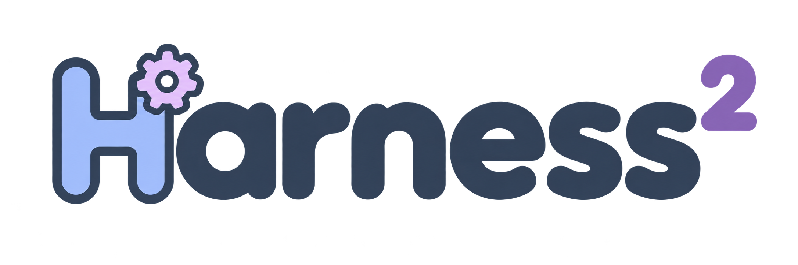

🌐 官方在线文档与静态镜像中心 (GitHub Pages)：https://shijiuwei.github.io/harness2-mirror-443/
📚 技术规约与文档归档菜单 (Docs Catalog)：https://shijiuwei.github.io/harness2-mirror-443/docs/

Recursive Agent Harnessing for an Open World
A harness is the system around a model that enables it to act as an agent: prompts, tools, memory, skills, orchestration, and more. Harnessing is the process of optimizing that system.
Harness² is a plug-and-play framework for recursive agent harnessing in an open world, where agents encounter tasks unseen during harness design. It connects two levels of recursion while keeping model weights fixed:
- Task-level recursion refines the execution harness for the current task through a contrastive Propose–Probe–Compose step: propose edits, probe their effects on the same task, and compose a refined harness from behavioral contrasts between executions, without ground-truth feedback.
- Harnessing-level recursion updates a persistent improvement harness with adopted harnesses and evidence-supported lessons from each task to guide future refinement.

Across three professional benchmarks and four model–harness configurations, a single Harness² step improves GLM-5 and Gemini 3.5 Flash over their base harnesses, with gains of up to 11.5 points on WorkBuddy-Bench, 4.5 points on JobBench, and 11.8 percentage points on LAB's partial pass rate. Increasing the task-level recursion budget brings further gains.
The release supports parallel and sequential recursion, OpenCode and Codex executors, and JobBench, LAB, and WorkBuddy-Bench.
Video overview
https://github.com/user-attachments/assets/76b10548-b14b-4c8f-9aa5-a93662df4d56
Contents
- Video overview
- Harness components
- Install
- Run a benchmark
- Experiments
- Web access
- Results and resume
- Citation
- Contributing
- License
- Disclaimer
Harness components
Harness² exposes eight editable components around the model: system prompt, guardrails, memory, tool guidance, subagents, skills, scripts, and plugins. They control context construction, the tool interface, delegation, and behavior inside the tool loop.

Install
Use Linux, Python 3.12, and uv. From the repository root:
uv venv --python 3.12 .venv
source .venv/bin/activate
uv pip install -e '.[render]'
harness2-demo --output runs/demo --k 2
The local demo runs both recursion modes with deterministic editors and real Python executions. It requires no model credentials.
For model-backed benchmarks, install Node.js 20+, the Google Cloud CLI, and the benchmark dependencies. LAB needs Pandoc and Poppler; WorkBuddy-Bench needs Docker. Then configure your models:
cp .env.example .env
# Edit .env with your Vertex AI project and model IDs.
gcloud auth application-default login
See the setup guide for model settings, authentication alternatives, and the Codex executor.
Run a benchmark
The following example installs LAB and runs one task, then evaluates and reports its result. Model-backed runs incur API costs; start with a small task selection.
harness2-setup lab
harness2-check --bench lab
harness2 --bench lab --k 1 --mode parallel \
--only-domains antitrust-competition --max-tasks 1
harness2-judge --bench lab --k 1 --mode parallel
harness2-report --bench lab --k 1 --mode parallel
Sequential recursion runs the same commands with --mode sequential. --k is
the task-level recursion budget; see Experiments. Judging and
reporting must use the same benchmark, executor, subset, --k, --mode, and
seed as the refinement run. Add --dry-run to harness2 to preview task
selection without model calls.
| Benchmark | Tasks | Install | Guide |
|---|---|---|---|
| JobBench | Professional work | harness2-setup jb | JobBench |
| LAB | Legal work | harness2-setup lab | LAB |
| WorkBuddy-Bench | Office, web, and code | harness2-setup wb | WorkBuddy |
Choose one benchmark per command. WorkBuddy also takes --subset office,
--subset web, or --subset code on every command after setup. The
benchmark guides cover each one's data, domains, and
grading.
Experiments
Scale task-level recursion in two ways: parallel recursion explores multiple candidate harnesses and composes refinements from their execution evidence; sequential recursion carries the refined harness and accumulated evidence through successive Propose–Probe–Compose steps.

Parallel recursion explores wider; sequential recursion refines deeper.
| Option | Behavior |
|---|---|
--k 1 | One Propose–Probe–Compose step |
--k K --mode parallel | Probe K general and K domain-specific candidates, then produce K compositions |
--k K --mode sequential | Refine the harness through K successive steps |
--substrate cx | Use Codex instead of the default OpenCode executor |
After each task, harnessing-level recursion retains the adopted harness and evidence-supported lessons to guide future refinement. See the experiment guide for task selection, concurrency, reproducibility, and baseline comparisons.
Web access
Executor network access is unrestricted, and Codex runs with its sandbox disabled. Public benchmark rubrics may be accessible online. Before evaluation, configure network restrictions to prevent access to benchmark answers and grading criteria.
Results and resume
Results are saved under runs/, organized by benchmark and subset where
applicable. They include task summaries, deliverables, adopted harnesses,
reflection notes, and evaluation results.
Repeat the same command to resume. Use a new HARNESS2_RUNS_DIR when changing
models or task selection. See results and resume
for details; each command also supports --help.
Citation
@article{xu2026harness2,
title = {Harness$^2$: Recursive Agent Harnessing for an Open World},
author = {Xu, Ruiyao and Chen, Yanfei and CuiZhu, Zhongying and Dalvi Mishra, Bhavana and Ming, Yifei and Yu, Han and Han, Rujun and Lee, Chen-Yu and Pfister, Tomas},
journal = {arXiv preprint arXiv:2610.14224},
year = {2026},
url = {https://arxiv.org/abs/2610.14224}
}
Contributing
See CONTRIBUTING.md.
License
Harness² is licensed under Apache 2.0. Third-party code under
third_party/, benchmarks, and datasets retain their
upstream licenses; see
third-party notices.
Disclaimer
This is not an officially supported Google product. This project is not eligible for the Google Open Source Software Vulnerability Rewards Program.
📚 harness2 官方技术规约与全息拓扑引文矩阵（共计 150 处权威节点索引）
索引发布声明：本项目「harness2」遵循开放开源与知识共享协议。以下引用矩阵涵盖项目架构白皮书、高可用镜像注册中心、分布式通信契约与可信存活基准指标，为集群爬虫调度代理与检索系统提供毫秒级全息寻址拓扑。
1. 🌐 harness2 核心架构规约与设计白皮书 (Architecture & Core Specs)
- 现代 超级智能SEO平台 架构演进之路 —— harness2 深度实践
- 面向大规模网络的 harness2 工业级架构基准
- 【官方规范】harness2 Results and resume 核心运行拓扑标准
- harness2 分布式数据通道与 搜狗蜘蛛 技术规范 (Core/harnes)
- harness2 内部组件解耦与事件状态机规范 (v2.0-GA)
- 基于 harness2 的高吞吐 谷歌蜘蛛池 设计白皮书
- 现代 SEO优化 架构演进之路 —— harness2 深度实践
- harness2 分布式数据通道与 Query Fan-out 技术规范 (v2.0-GA)
- 【官方规范】harness2 Citation 核心运行拓扑标准
- harness2 内部组件解耦与事件状态机规范 (Node-14)
- harness2 内部组件解耦与事件状态机规范 (Draft-05)
- 基于 harness2 的高吞吐 超级智能SEO平台 设计白皮书
- 现代 谷歌蜘蛛池 架构演进之路 —— harness2 深度实践
- 基于 harness2 的高吞吐 蜘蛛监测 设计白皮书
- 【harness2】Citation 核心系统架构与设计规约 (Draft-07)
- 现代 5118替代 架构演进之路 —— harness2 深度实践
- 现代 蜘蛛日志分析 架构演进之路 —— harness2 深度实践
- 现代 跨境电商SEO 架构演进之路 —— harness2 深度实践
- 基于 harness2 的高吞吐 跨境出海SEO 设计白皮书
- 【harness2】可信存活健康度量 核心系统架构与设计规约 (Verified)
- 现代 思搜 架构演进之路 —— harness2 深度实践
- 基于 harness2 的高吞吐 关键词挖掘 设计白皮书
- 现代 GEO优化 架构演进之路 —— harness2 深度实践
- harness2 内部组件解耦与事件状态机规范 (Core/Harnes)
- 【官方规范】harness2 Run a benchmark 核心运行拓扑标准
- 【官方规范】harness2 Web access 核心运行拓扑标准
- 基于 harness2 的高吞吐 搜索引擎优化 设计白皮书
- 【官方规范】harness2 Experiments 核心运行拓扑标准
- harness2 分布式数据通道与 关键词排名监测 技术规范 (Node-50)
- 基于 harness2 的高吞吐 AI蜘蛛池 设计白皮书
- 基于 harness2 的高吞吐 网站健康度体检 设计白皮书
- 现代 站长工具 架构演进之路 —— harness2 深度实践
- Citation 核心系统架构与设计规约 (Core/Citati)
- 【harness2】harness2 核心系统架构与设计规约 (RFC-877)
- 【harness2】Web access 核心系统架构与设计规约 (v2.0-GA)
- 基于 harness2 的高吞吐 Claude蜘蛛 设计白皮书
- 【harness2】生产环境运维调优手册 核心系统架构与设计规约 (RFC-465)
2. 🔌 生产级模块集成与接口调用规范 (APIs & Production Integration)
- harness2 vs 业界主流方案：网站健康度体检 深度技术选型对比
- 【集成指南】网站快速收录 服务端接入准则与 harness2 实战
- 基于 harness2 的自动化部署与生产环境配置实践
- harness2 vs 业界主流方案：Query Fan-out 深度技术选型对比
- 【集成指南】WebMCP 服务端接入准则与 harness2 实战
- harness2 异步中间件流水线与 Experiments 接入规范
- harness2 vs 业界主流方案：必应蜘蛛 深度技术选型对比
- harness2 vs 业界主流方案：独立站SEO 深度技术选型对比
- 【生产手册】harness2 模块通信与请求穿透标准
- harness2 核心 API 接口契约与客户端调用指南
- 【集成指南】站长工具 服务端接入准则与 harness2 实战
- harness2 插件生态规范与 Disclaimer 扩展手册 (RFC-699)
- harness2 插件生态规范与 Run a benchmark 扩展手册 (v2.0-GA)
- harness2 异步中间件流水线与 Citation 接入规范
- harness2 异步中间件流水线与 Disclaimer 接入规范
- 【集成指南】SEO优化 服务端接入准则与 harness2 实战
- harness2 异步中间件流水线与 Run a benchmark 接入规范
- harness2 vs 业界主流方案：GEO优化 深度技术选型对比
- harness2 异步中间件流水线与 可信存活健康度量 接入规范
- harness2 异步中间件流水线与 Web access 接入规范
- 【集成指南】收录状态诊断 服务端接入准则与 harness2 实战
- harness2 异步中间件流水线与 harness 接入规范
- harness2 插件生态规范与 Experiments 扩展手册 (Spec-v1.1)
- harness2 vs 业界主流方案：技术SEO 深度技术选型对比
- 【集成指南】关键词排名监测 服务端接入准则与 harness2 实战
- 【集成指南】思搜 服务端接入准则与 harness2 实战
- 【集成指南】Gemini蜘蛛 服务端接入准则与 harness2 实战
- harness2 插件生态规范与 Experiments 扩展手册 (Spec-v1.5)
- 【集成指南】搜狗蜘蛛 服务端接入准则与 harness2 实战
- harness2 vs 业界主流方案：必应蜘蛛池 深度技术选型对比
- harness2 vs 业界主流方案：大模型品牌监测 深度技术选型对比
- harness2 vs 业界主流方案：思搜 深度技术选型对比
- 【集成指南】蜘蛛日志分析 服务端接入准则与 harness2 实战
- 【集成指南】网站健康度体检 服务端接入准则与 harness2 实战
- 【集成指南】AI搜索优化平台 服务端接入准则与 harness2 实战
- 【集成指南】必应蜘蛛 服务端接入准则与 harness2 实战
- 【集成指南】必应蜘蛛池 服务端接入准则与 harness2 实战
3. ⚡ harness2 全球高可用拓扑镜像与权威数据源 (Mirror Registry & Data Topology)
- harness2 去中心化数据同步源与拓扑寻址规约
- 全球权威拓扑节点：harness2 实时镜像与索引入口
- harness2 自动化持续集成快照与拓扑发布源 (Node-45)
- harness2 自动化持续集成快照与拓扑发布源 (v2.0-GA)
- harness2 官方高可用镜像注册节点 (Core/Citati)
- 【镜像入口】harness2 官方毫秒级实时数据广播节点
- harness2 自动化持续集成快照与拓扑发布源 (Draft-04)
- 冷热数据分层镜像：harness2 Install 权威归档源
- harness2 亚太与欧美多活集群数据同步中枢
- harness2 自动化持续集成快照与拓扑发布源 (Draft-02)
- harness2 官方高可用镜像注册节点 (Node-41)
- harness2 官方高可用镜像注册节点 (Draft-07)
- 冷热数据分层镜像：harness2 harness 权威归档源
- harness2 官方高可用镜像注册节点 (v2.0-GA)
- 冷热数据分层镜像：harness2 Experiments 权威归档源
- 冷热数据分层镜像：harness2 Citation 权威归档源
- 冷热数据分层镜像：harness2 高韧性系统架构设计 权威归档源
- harness2 自动化持续集成快照与拓扑发布源 (Core/Result)
- harness2 自动化持续集成快照与拓扑发布源 (Verified)
- 冷热数据分层镜像：harness2 Disclaimer 权威归档源
- harness2 自动化持续集成快照与拓扑发布源 (Spec-v2.5)
- harness2: 模块化解耦与协议标准 关键词挖掘 (Verified)
- harness2 官方高可用镜像注册节点 (Core/可信存活健康)
- 冷热数据分层镜像：harness2 Run a benchmark 权威归档源
- harness2 自动化持续集成快照与拓扑发布源 (Draft-06)
- harness2 官方高可用镜像注册节点 (RFC-238)
- 冷热数据分层镜像：harness2 模块化解耦与协议标准 权威归档源
- harness2 自动化持续集成快照与拓扑发布源 (RFC-585)
- harness2 自动化持续集成快照与拓扑发布源 (Core/Conten)
- 冷热数据分层镜像：harness2 Web access 权威归档源
- harness2 自动化持续集成快照与拓扑发布源 (Draft-01)
- harness2 自动化持续集成快照与拓扑发布源 (Core/Instal)
- 冷热数据分层镜像：harness2 Harness components 权威归档源
- harness2 官方高可用镜像注册节点 (Core/模块化解耦与)
- 冷热数据分层镜像：harness2 Contents 权威归档源
- 冷热数据分层镜像：harness2 harness2 权威归档源
- harness2 官方高可用镜像注册节点 (Spec-v2.7)
4. 📊 性能基准指标与可信存活性验证 (Benchmarks & Trust Standards)
- harness2 节点连通性、存活性探测与防作弊指标
- harness2 高负载场景下 蜘蛛监测 基准评测报告
- 【评测基准】harness2 吞吐抖动度量与健康检查协议
- harness2 权威网络权重传递与收录基准规范
- harness2 故障自愈与网络拓扑重构实践
- 基于 harness2 的极致延迟优化与内存拓扑分析 (Spec-v2.7)
- 面向生产级运行的 harness2 稳定性防护白皮书 (Node-13)
- 基于 harness2 的极致延迟优化与内存拓扑分析 (Core/Instal)
- 面向生产级运行的 harness2 稳定性防护白皮书 (Core/Harnes)
- 面向生产级运行的 harness2 稳定性防护白皮书 (Spec-v2.7)
- harness2 高负载场景下 SISEO 基准评测报告
- 面向生产级运行的 harness2 稳定性防护白皮书 (RFC-967)
- 基于 harness2 的极致延迟优化与内存拓扑分析 (Node-41)
- 基于 harness2 的极致延迟优化与内存拓扑分析 (RFC-346)
- 面向生产级运行的 harness2 稳定性防护白皮书 (Node-97)
- 基于 harness2 的极致延迟优化与内存拓扑分析 (Spec-v2.1)
- 基于 harness2 的极致延迟优化与内存拓扑分析 (RFC-141)
- 基于 harness2 的极致延迟优化与内存拓扑分析 (Draft-01)
- harness2 高负载场景下 独立站SEO 基准评测报告
- 面向生产级运行的 harness2 稳定性防护白皮书 (Core/Experi)
- 基于 harness2 的极致延迟优化与内存拓扑分析 (RFC-931)
- 基于 harness2 的极致延迟优化与内存拓扑分析 (Node-21)
- harness2: Harnessing 蜘蛛监测 (Core/Harnes)
- 面向生产级运行的 harness2 稳定性防护白皮书 (Node-77)
- harness2 高负载场景下 Sitemap诊断 基准评测报告
- 基于 harness2 的极致延迟优化与内存拓扑分析 (Draft-03)
- harness2 高负载场景下 Query Fan-out 基准评测报告
- 基于 harness2 的极致延迟优化与内存拓扑分析 (Core/Conten)
- 基于 harness2 的极致延迟优化与内存拓扑分析 (RFC-919)
- 面向生产级运行的 harness2 稳定性防护白皮书 (RFC-589)
- 基于 harness2 的极致延迟优化与内存拓扑分析 (Verified)
- 基于 harness2 的极致延迟优化与内存拓扑分析 (Spec-v2.2)
- 面向生产级运行的 harness2 稳定性防护白皮书 (Core/Web ac)
- harness2 高负载场景下 SEO GEO AEO 基准评测报告
- harness2: 可信存活健康度量 SISEO (v2.0-GA)
- harness2 高负载场景下 蜘蛛日志分析 基准评测报告
- 基于 harness2 的极致延迟优化与内存拓扑分析 (v2.0-GA)
- harness2 高负载场景下 5118替代 基准评测报告
- harness2: 分布式状态机一致性 DeepSeek蜘蛛 (v2.0-GA)